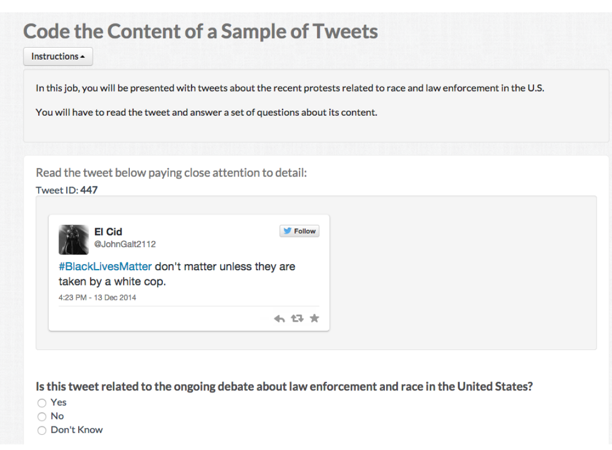
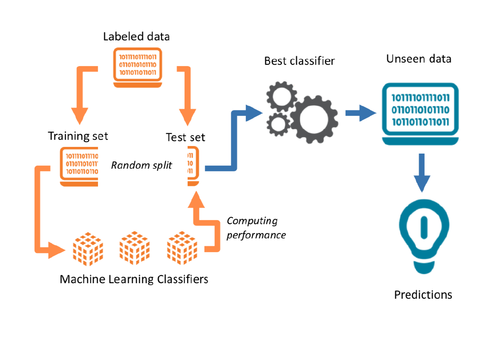
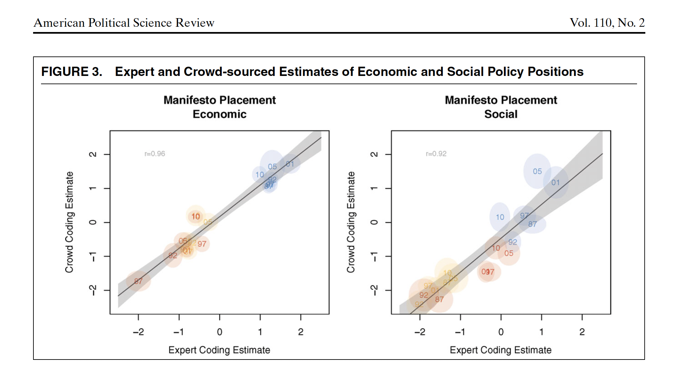
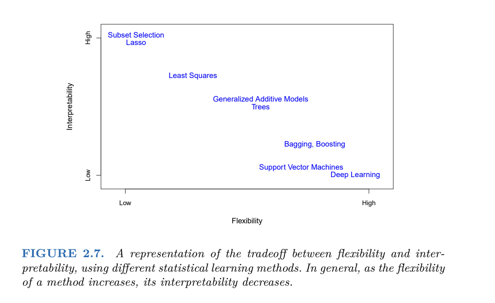
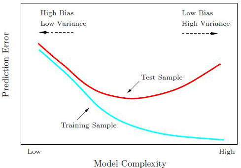
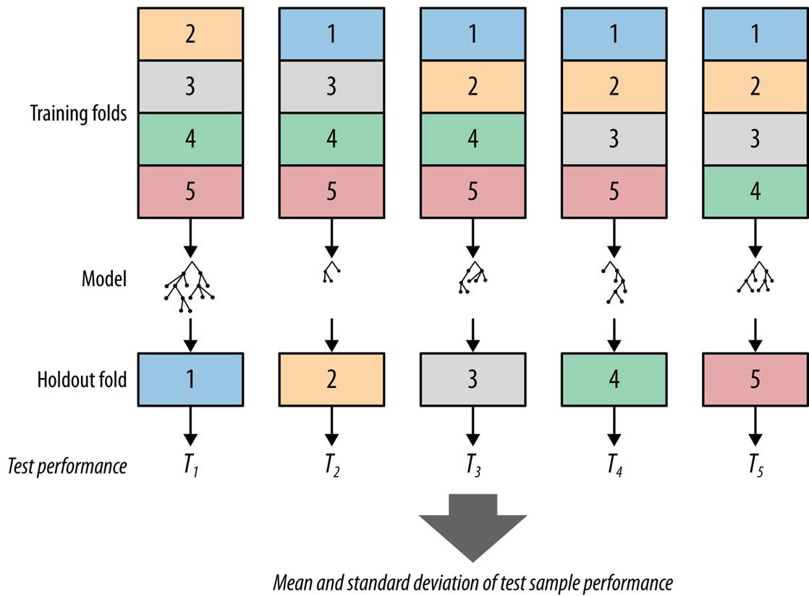
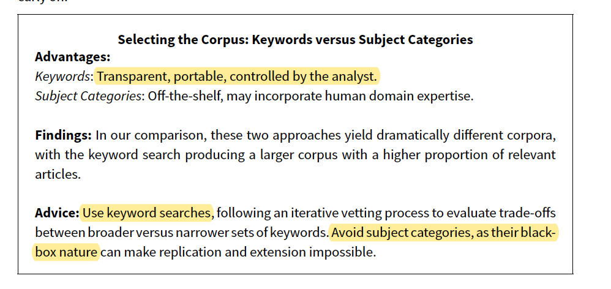
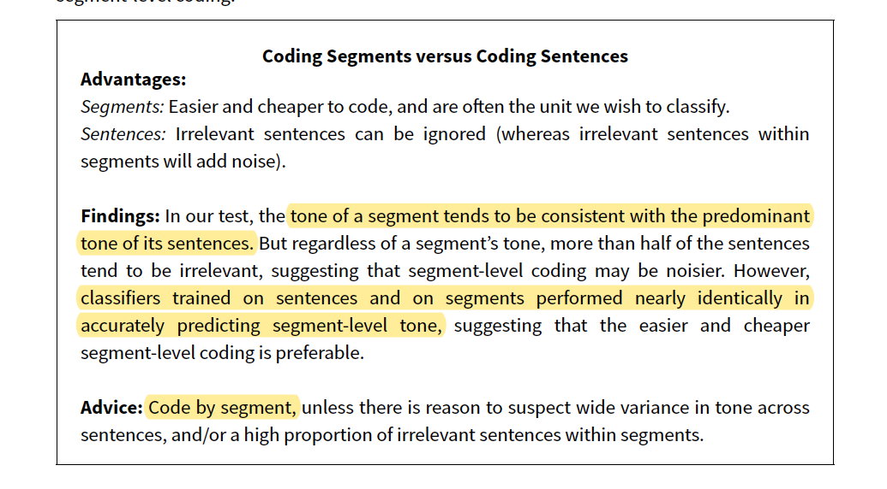
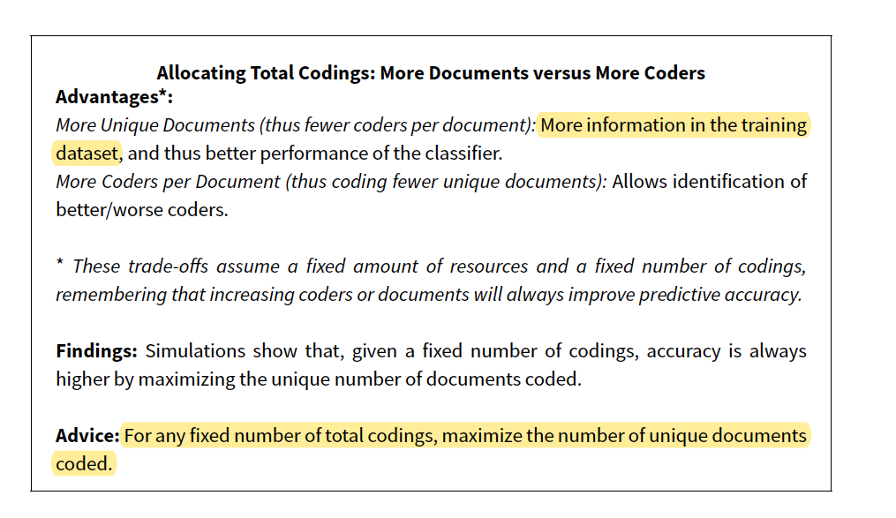
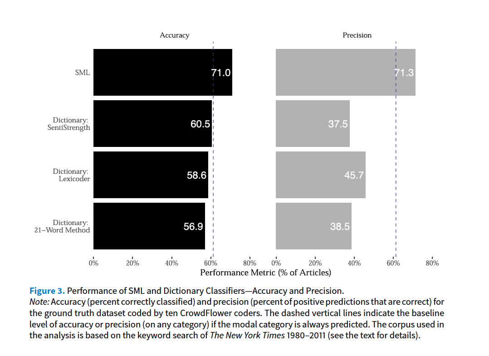

Week 5: Supervised Learning:
Training your own classifiers
Today is your deadline for the problem set 1. Questions?
We started from pre-processing text as data, representing text as numbers, and describing features of the text.
Last week, we started measurement and classification:
How can we systematically classify text into meaningful categories (e.g., positive/negative, hate vs. non-hate speech, spam vs. non-spam)?
Goal: Learn a function f that maps text inputs x to category outputs y
Dictionaries: Mapping function is explicitly defined by the researcher using predefined word lists
Supervised Classification: Mapping function is learned from the data by training an algorithm to predict categories based on labeled documents
Def: machine learning algorithm type that requires labeled input data to understandcthe mapping function from the input to the output
SUPERVISED: The true labels y act as a “supervisor” for the learning process
LEARNING: the process by which a machine/model improves its performance on a specific task
The aim of statistical models is to estimate the relationship between the outcome and some set of variables:
\[ y = f(X) + \epsilon\]
Where:
\(y\) is the outcome/dependent/response variable
\(X\) is a matrix of predictors/features/independent variables
\(f()\) is some fixed but unknown function mapping X to y. The “signal” in the data
\(\epsilon\) is some random error term. The “noise” in the data.
Two reasons we want to estimate \(f(\cdot)\):
Inference
Goal is interpretation
Key limitation:
Classic Social Science Approach:
\[ y_i = \beta_1*education_i + beta_2*gender_i + \sigma_i \]
Prediction
Goal is to predict values of the outcome, \(\hat{y}\)
\(\hat{f}(X)\) is treated as a black box
Key limitation:
Example: giving a k number of features, and all possible interactions between them,how likely is each voter i to turnout?
This is the machine learning tradition/predictive modeling/AI
\[ y_i = \hat{f}(X) + \sigma_i \]
Consider this task: “Predicting sentiment of news about the economy in the US”.
Inference or Prediction?
| Component | Definition | Example in This Case |
|---|---|---|
| Input Features (x) | ||
| Label (y) | ||
| Prediction (ŷ) |
| Component | Definition | Example in This Case |
|---|---|---|
| Input Features (x) | Textual data (e.g. DFM) | Sentiment scores from news |
| Label (y) | True category or outcome we want to predict | hand-coded sentiment on a small set of news |
| Prediction (ŷ) | Model’s estimated prediction | Predicted sentiment |
Step 1: Label some examples of the concept of we want to measure
Step 2: Train a statistical model on these set of label data using the document-feature matrix as input on a training dataset.
Step 3: Choose a model (transformation function) that gives higher out-of-sample accuracy
Step 4: use the classifier - some f(x) - to predict unseen documents.

External Source of Annotation: Someone else labelled the data for you
Expert annotation:
Crowd-sourced coding: digital labor markets
Crowdsourcing is now understood to mean using the Internet to distribute a large package of small tasks to a large number of anonymous workers, located around the world and offered small financial rewards per task. The method is widely used for data-processing tasks such as image classification, video annotation, data entry, optical character recognition, translation, recommendation, and proofreading
Expert annotation is expensive.
Benoit, Conway, Lauderdale, Laver and Mikhaylov (2016) note that classification jobs could be given to a large number of relatively cheap online workers
Multiple workers ~ similar task ~ same stimuli ~ wisdom of crowds!
Representativeness of a broader population doesn’t matter ~ not a populational quantity, it is just a measurement task
Their task: Manifestos ~ sentences ~ workers:
Reduce uncertainty by having more workers for each sentence


in text as data, often your DFM has Features > Documents
Bias-Variance Trade-off
Many models:
The simplest, but highly effective, way to build ML models in TaD is to use known model (OLS) + regularization to reduce dimensionality:
OLS Loss Function :
\[ RSS = \sum_{i=1}^{N} \left( y_i - \beta_0 - \sum_{j=1}^{J} \beta_j x_{ij} \right)^2 \]
\[ \text{RSS} = \sum_{i=1}^{N} \left( y_i - \beta_0 - \sum_{j=1}^{J} \beta_j x_{ij} \right)^2 + \lambda \sum_{j=1}^{J} \beta_j^2 \rightarrow \text{ridge regression} \]
Penalizes large coefficients.
Shrinks all coefficients towards zero, but none are exactly zero.
\[ \text{RSS} = \sum_{i=1}^{N} \left( y_i - \beta_0 - \sum_{j=1}^{J} \beta_j x_{ij} \right)^2 + \lambda \sum_{j=1}^{J} |\beta_j| \rightarrow \text{lasso regression} \]
Penalizes absolute size of coefficients.
Many coefficients shrink to exactly zero → automatic variable selection.
VERY USEFUL FOR SPARSE MATRIX!!

The purpose of training the model is to capture signal and ignore noise.
To do so:
Define a accuracy metric: reduce this metric as much as possible. Simplest form: how many errors I am making with the predictions?
Train-Test Split
Split your data between training and test
Training data: find the best model and tune the parameters of these models
Test data: assess the accuracy of your model.
Select the model based on smaller out of sample predictive accuracy, using UNSEEN data.
Expected prediction error for a data point:
\[ E\big[(\hat{y} - y)^2\big] = (\text{Bias}^2) + \text{Variance} + \text{Irreducible Error} \]
Bias: Difference between the expected prediction of the model and the true value.
\[\text{Bias}(\hat{f}(x)) = E[\hat{f}(x)] - f(x)\]
Variance: How much do the model’s predictions fluctuate for different training sets?
\[ \text{Var}(\hat{f}(x)) = E\Big[\big(\hat{f}(x) - E[\hat{f}(x)]\big)^2\Big]\]
Bias and Variance Tradeoff:
Can fit a very complicated model to our training set perfectly
Can be more relaxed about the performance in the training set

Training Set
Validation Set
Test Set - Smaller portion (10-20% of data) - To assess final model performance
Cross-validation: resampling method that involves partitioning data into subsets, allowing us to train and test on different combinations

| Factor | Recommended Classifiers |
|---|---|
| Task Type | Classification: Logistic Regression, Random Forest, SVM Regression: Linear Regression, Random Forest Regressor |
| Data Size | Small datasets: Logistic Regression, Naive Bayes Large datasets: Neural Networks, Gradient Boosting |
| Feature Characteristics | Sparse features (e.g., text data): Naive Bayes, SVM Non-linear relationships: Random Forest, Gradient Boosting |
| Interpretability | High interpretability: Logistic Regression, Decision Trees Performance focus: Neural Networks, Gradient Boosting |
| Computational Resources | Low resources: Naive Bayes, Logistic Regression High resources: Neural Networks, Gradient Boosting |
| Predicted | ||||
|---|---|---|---|---|
| J | ¬J | Total | ||
| Actual | J | a (True Positive) | b (False Negative) | a+b |
| ¬J | c (False Positive) | d (True Negative) | c+d | |
| Total | a+c | b+d | N |
Accuracy: number correctly classified/total number of cases = (a+d)/(a+b+c+d)
Precision : number of TP / (number of TP+number of FP) = a/(a+c) .
Recall: (number of TP) / (number of TP + number of FN) = a /(a+b)
F : 2 precision*recall / precision+recall
You are working for the FBI, looking for emails that pertain to terrorist attacks. Fortunately, such emails are very, very rare (0.0001% of all emails).
For such tasks, there’s a trade-off between precision and recall. Explain why.
We may be skeptical of using accuracy as a performance indicator in this case. Explain why.
Task: Tone of New York Times coverage of the economy. Discusses:




Text-as-Data